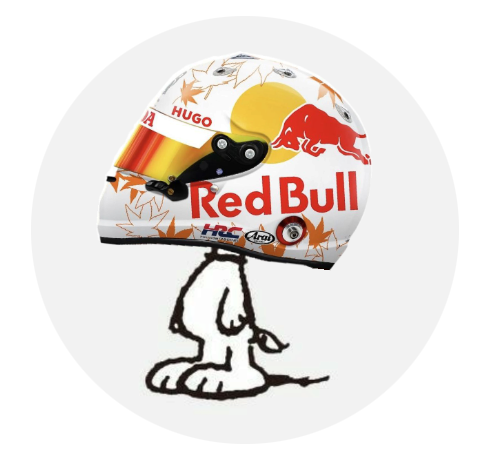

Parada más cercana
Busca la parada más cercana
Permite el acceso a tu ubicación para ver las próximas llegadas.
Rutas activas
0 activas
0 de 0 rutas
Toca para monitorear

Movilidad del MIO en tiempo real
Busca la parada más cercana
Permite el acceso a tu ubicación para ver las próximas llegadas.